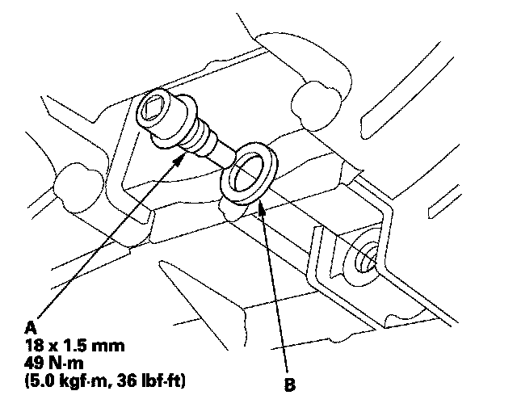
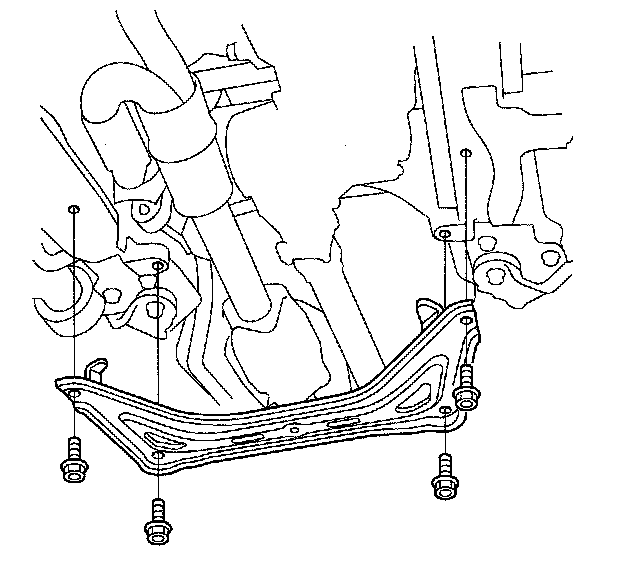

Transfer Assembly Removal
Transfer Assembly Removal1. Raise the vehicle, and make sure it is supported securely.
2. Shift the transmission into the N position.
3. Remove the transmission undercover.
4. Remove the drain plug (A) and drain the automatic transmission fluid (ATF).

5. Reinstall the drain plug with a new sealing washer (B).
6. Remove the front subframe stiffener.

7. Remove the exhaust pipe A.
8. Remove the bolt securing the transfer breather hose bracket (A) and disconnect the breather hose (B) from the breather pipe (C) on the transfer assembly.
9. Make a reference mark (A) across the propeller shaft (B) and the transfer companion flange (C).
10. Separate the propeller shaft from the transfer companion flange.
11. Remove the transfer assembly from the transmission.